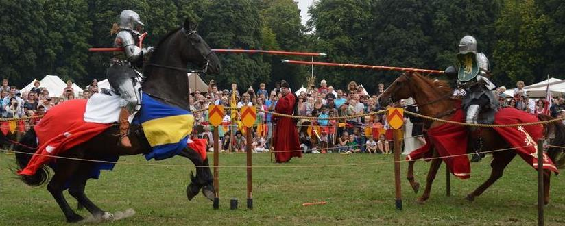

King-o-bot's Games
Summary
By now you should have mastered the movement and communication abilities of kilobots. However, there is one last sensing ability you have yet to discover : distance sensing.
Kilobots can evaluate their distance from another kilobot when they receive a message : that's the purpose of the message_rx() function's second argument.
In this simple tutorial, we are going to put two kilobots one in front of the other. As medieval knights, they will charge the other. However, the kilobots are really fearful and, when they will reach their personal distance limit, they will freak out and give up.

What you will learn
- How to evaluate distance with the
distance_measurement_targument andestimate_distance() - More complex state management
Knight's program
Defining macros and global variables
To make our program more configurable and readable, we are going to use C macros. The first two macros are used to define boundaries for the kilobot's distance limit. The four following macros define the kilobot's state.
#define MIN_DISTANCE 35
#define MAX_DISTANCE 70
#define CHARGING 0
#define FREAKING_OUT 1
#define WON 2
#define LOST 3
Our program will also use 3 global variables. One will contain the kilobot's distance limit, the second contains its state and the last one is used for storing messages.
int distanceLimit;
int state;
message_t message;
The setup() function
Here we define the kilobot's custom distance limit using rand_hard(). We set the initial state : at the beginning, the two kilobots are charging. When communicating, the kilobot will send its state in data, so that the other kilobot know when its opponent freaks out. Finally, we set the color to an aggressive red and make the kilobot run forward.
void setup() {
// Set the distance limit.
distanceLimit = (rand_hard() % (MAX_DISTANCE - MIN_DISTANCE)) + MIN_DISTANCE;
// Set the state
state = CHARGING;
// Set the message
message.type = NORMAL;
message.data[0] = state;
message.crc = message_crc(&message);
// Set light and movement
set_color(RGB(3, 0, 0));
spinup_motors();
set_motors(kilo_straight_left, kilo_straight_right);
}
Note
We defined MIN_DISTANCE and MAX_DISTANCE to be 35 and 70 millimeters respectively. This means that distanceLimit will always be between those two values.
Communications
Now this is the big part of this tutorial.
The message_tx() function is quite classic know :
message_t* message_tx() {
return &message;
}
The message_rx() function however, is where the magic happens. Here, we analyse the state of the opponent and its distance from us. If the opponent is still charging and is closer than our distance limit, we start to freak out and surrender. If the opponent is freaking out on the other hand, we win and stop moving.
void message_rx(message_t *m, distance_measurement_t *d) {
if (state == CHARGING && m->data[0] == CHARGING) {
// The kilobot and his opponent are still charging each other
if (estimate_distance(d) < distanceLimit) {
// The kilobot freaks out and surrender
state = FREAKING_OUT;
// Change message
message.data[0] = state;
message.crc = message_crc(&message);
// Change movement
spinup_motors();
set_motors(0, kilo_turn_right);
}
}
else if (m->data[0]) {
// The oponnent is freaking out
state = WON;
// Stop charging
spinup_motors();
set_motors(0, 0);
}
}
Here you can see how measuring distance is easy. We only need to pass the second argument of message_rx() to estimate_distance(). The result is an approximation of the distance between the two kilobots in millimeters. It can be stored as an int and compared with the distanceLimit we have defined earlier.
The loop() function
The loop() function will take care of the kilobot's shown behavior depending on its state.
void loop() {
if (state == CHARGING) {
// The kilobot is charging : blink red
set_color(RGB(3, 0, 0));
delay(100);
set_color(RGB(0, 0, 0));
delay(100);
}
else if (state == FREAKING_OUT) {
// The kilobot is freaking out : quickly blink white for 2 seconds
for (int i = 0 ; i < 2000 ; i += 200) {
set_color(RGB(3, 3, 3));
delay(100);
set_color(RGB(0, 0, 0));
delay(100);
}
// The kilobot is calming down, he lost
set_motors(0, 0);
state = LOST;
}
else if (state == WON) {
// The kilobot won the fight : blink blue, green and yellow
set_color(RGB(0, 0, 3));
delay(100);
set_color(RGB(0, 3, 0));
delay(100);
set_color(RGB(3, 3, 0));
delay(100);
}
else {
// The kilobot lost the fight : slowly, shamefully blinks white
set_color(RGB(1, 1, 1));
delay(2000);
set_color(RGB(0, 0, 0));
delay(2000);
}
}
Put it all together
Once again, nothing new in the main() function :
int main()
{
kilo_init();
kilo_message_tx = message_tx;
kilo_message_rx = message_rx;
kilo_start(setup, loop);
return 0;
}
We are done !
You can now make impressive and quite shocking kilobots duels ! Place them in front of each other, start and watch them charge... until one freaks out.
You have mastered distance sensing and are now ready to code some complex programs for kilobots. It's now time to implement collective behaviors with a bigger number of kilobots.